Senior DesignOps & Program Ops · Berlin
My focus in DesignOps is the people:
how teams form trust, why they resist change,
what they need to do good work together.
About
I started in industrial product design. Even though I have a passion for materials and interfaces, the question that stayed with me was never really about the object. It was about the people making it: how they work together, where they get stuck, what they need to do good work.
For the past few years, I've been leading design operations: understanding team dynamics, building structures that keep design moving across teams, and using AI to compress what used to take months into weeks.
Currently looking for a senior DesignOps leadership role where I can bring that kind of operational clarity and learn from peers.
Experience